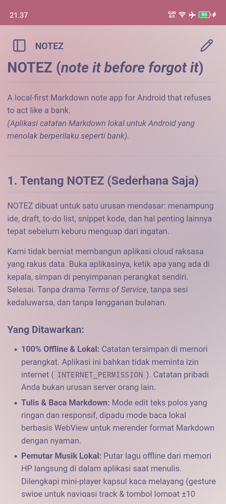
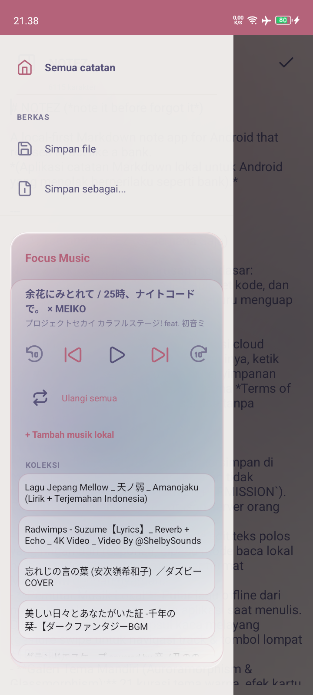
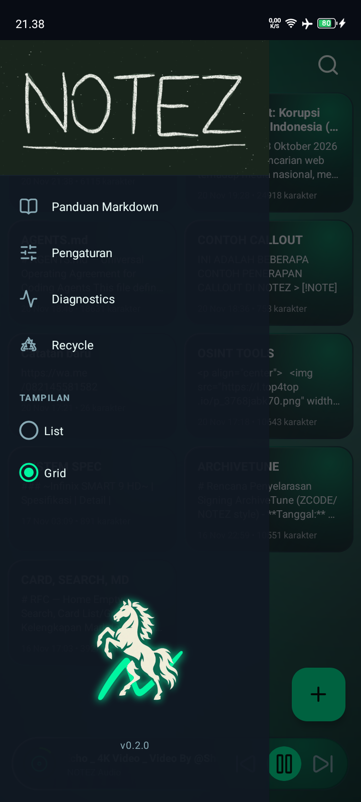
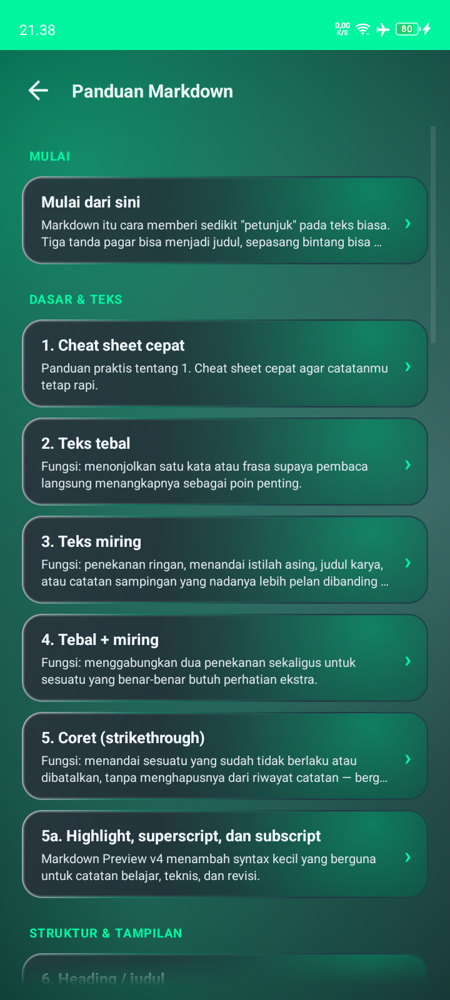

NOTEZ
*note it before forgot it
Aplikasi catatan Markdown offline-first untuk Android. Nol analitik, nol akun, nol ketergantungan cloud, dengan pemutar musik fokus lokal terintegrasi.
Prinsip Rekayasa
Dibangun untuk bekerja secara mandiri di ponsel Anda tanpa perantara.
Offline-First Murni
Catatan tersimpan di database lokal SQLite Room. Ekspor dan impor memanfaatkan Android Storage Access Framework (SAF) langsung ke berkas .json dan .md milik Anda.
Editor & Reader Markdown
Mendukung heading, tabel, checklist, dan blok kode. Engine markdown-it dibundel di dalam APK tanpa request CDN eksternal dan terisolasi ketat dari runtime native.
Musik Fokus Lokal
Pemutar audio bawaan bertenaga AndroidX Media3 ExoPlayer. Putar file audio lokal di perangkat Anda saat menulis tanpa gangguan koneksi internet.
Privasi Mutlak
Tidak ada registrasi akun. Tidak ada SDK iklan, pelacak perilaku, atau telemetri tersembunyi. Kode sumber terbuka di bawah lisensi GNU GPL-3.0.
Tangkapan Layar Antarmuka
Tampilan antarmuka nyata dari perangkat Android.






Perbandingan Kejujuran: Catat di Atas Batu vs NOTEZ
Evaluasi teknis realistis antara media penyimpanan purba dan aplikasi modern.
| Parameter | Catat di Atas Batu | NOTEZ | Pemenang |
|---|---|---|---|
| Ketahanan Fisik | Tahan ribuan tahun terhadap cuaca dan zaman | Tergantung usia perangkat keras ponsel (3-7 tahun) | Batu |
| Kebutuhan Listrik | 0 Watt, tidak butuh pengisian daya | Membutuhkan baterai ponsel | Batu |
| Privasi Default | Bisa dibaca siapa pun yang lewat di gua/prasasti | Tersimpan di sandbox aplikasi lokal pribadi | NOTEZ |
| Kecepatan Edit & Hapus | Harus memahat ulang atau mengikis batu | Edit instan dengan riwayat modifikasi | NOTEZ |
| Bobot Portabilitas | 25 kilogram per lempeng prasasti | 3.1 megabyte di memori flash | NOTEZ |
| Dukungan Markdown | Hieroglif dan pahatan manual | Markdown standar CommonMark lengkap | NOTEZ |
Spesifikasi Teknis
"Biarkan seribu iblis bug menyerang, NOTEZ tetap berdiri tegak."
Prinsip Rekayasa NOTEZ · Tanpa kompromi pada kestabilan.